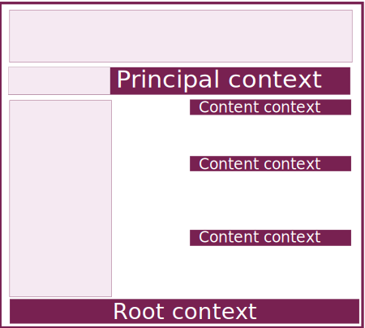

Одно из значений слова контекст это - “среда, в которой существует объект, его окружение”.
Роль Context - назначается элементам модели, которые не принадлежат к главной навигационной ветке сайта. Контекстные Actions как бы объясняют и уточняют содержание того элемента модели, которому они принадлежат.
Эти элементы могут размещаться в футере, горизонтальной навигационной панли или в контент панели - в зависимости от места, занимаемого в иерархии элементов модели.
При переходе к контекстной Action пользователь продолжает видеть элементы базового навигационного каркаса. Кроме того, в верхней части контент-панели формируется навигационный элемент, который по русски называется “Хлебные крошки”, а по английски - Breadcrumb. Хлебные крошки позволяют вернуться к родительскому разделу, в котором размещается контекстная страница.
